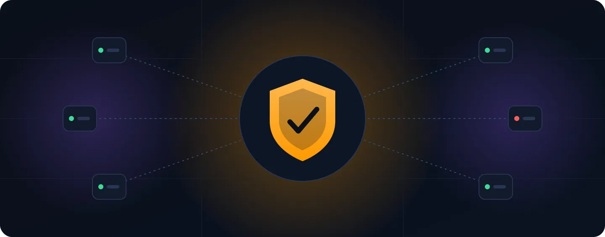
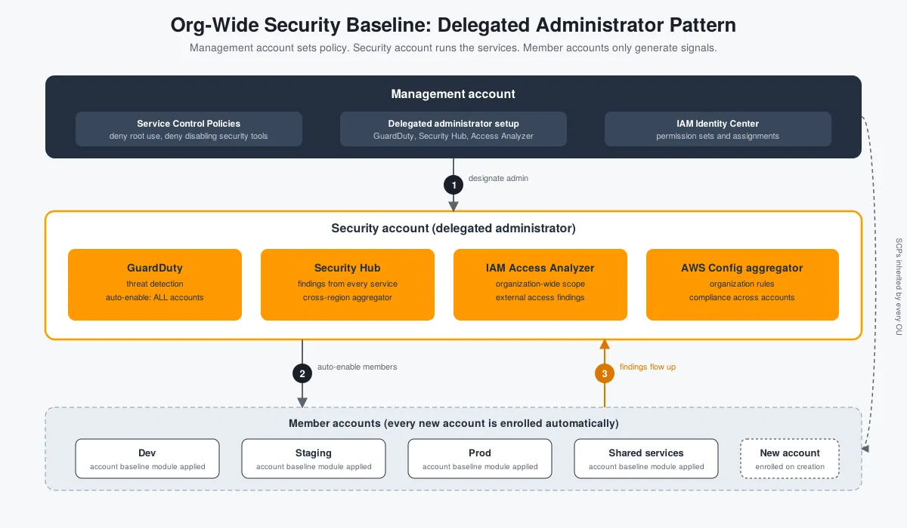

Building an Org-Wide AWS Security Baseline with Terraform
📋 Table of Contents
- What a Baseline Needs to Cover
- The Delegated Administrator Pattern
- Project Layout
- Step 0: Enable Trusted Access
- Step 1: Two Providers, One Apply
- Step 2: Designate Delegated Administrators
- Step 3: GuardDuty Across the Organization
- Step 4: Security Hub as the Single Pane
- Step 5: IAM Access Analyzer
- Step 6: AWS Config Aggregation
- Step 7: Preventive Guardrails with SCPs
- Step 8: Per-Account Hardening
- Step 9: Human Access with IAM Identity Center
- Verifying the Baseline
- Cost: Where the Bill Grows
- Common Pitfalls
- Where This Goes Next
What a Baseline Needs to Cover
Standing up a multi-account AWS organization is the easy half. The harder half is making sure that the fortieth account created next year has the same threat detection, the same guardrails and the same audit trail as the third one created today, without anyone remembering to click through a checklist.
Most teams start by enabling GuardDuty in the production account, then Security Hub in another, then a Config rule or two somewhere else. Within a few months the coverage is a patchwork: some accounts report findings, some do not, and nobody can say with confidence which is which. A security baseline fixes that by treating coverage as a property of the organization instead of a property of each account.
This post builds that baseline in Terraform using the delegated administrator pattern: the management account stays nearly empty, a dedicated security account runs GuardDuty, Security Hub, IAM Access Analyzer and AWS Config for the whole organization, and every new account is enrolled automatically. It also adds preventive guardrails with Service Control Policies, a small per-account hardening module, and centralized human access through IAM Identity Center.
The post assumes a working AWS Organization with a dedicated security account, familiarity with Terraform modules and provider aliases, and a state backend already in place. Organization and account creation are covered in the earlier landing zone post.

Organization-wide security baseline: the security account centrally manages detective services while SCPs provide preventive guardrails across member accounts.
Three Layers of an AWS Security Baseline
Security tooling falls into three layers, and each answers a different question:
| Layer | Question it answers | Tools used here |
|---|---|---|
| Preventive | What can never happen, whatever IAM says? | Service Control Policies, account-level hardening |
| Detective | What is happening, and what drifted? | GuardDuty, Security Hub, IAM Access Analyzer, AWS Config |
| Access | Who can get in, and with what permissions? | IAM Identity Center permission sets |
A baseline that covers only one layer leaves gaps. Detection without prevention produces a steady stream of findings about things that could have been blocked outright. Prevention without detection means the first sign of a problem is an incident.
The Delegated Administrator Pattern
Every service in this post supports the same arrangement. The management account designates one member account as the delegated administrator for the service. From then on:
- The management account does no day-to-day security work. It holds billing, Organizations and little else, which keeps its attack surface small.
- The security account sees every member account's data for that service and can change organization-wide settings, such as which accounts get auto-enrolled.
- Findings, resources and configuration for all accounts end up in one place, so the security team works from a single set of consoles.
The sequence is the same for each service, and it is what the numbers in the diagram show:
- The management account enables the service's trusted access in AWS Organizations and designates the security account.
- The security account turns the service on and sets the organization-wide configuration, including auto-enable for members.
- Member accounts are enrolled automatically, and findings flow up.
The management account establishes the relationship. The security account operates the service. Member accounts provide the security data.
Project Layout
The Terraform code is organized into three main areas: the organization configuration, resources that live in the security account, and a reusable module for account-level hardening.
security-baseline/
├── org/ # applied from the management account
│ ├── providers.tf # default provider (management) + aliased provider (security)
│ ├── delegated_admins.tf # designate the security account for each service
│ ├── scps.tf # preventive guardrails
│ └── identity_center.tf # permission sets and assignments
│
├── security-account/ # resources that live in the security account
│ ├── guardduty.tf
│ ├── securityhub.tf
│ ├── access_analyzer.tf
│ └── config.tf
│
└── modules/
└── account-baseline/ # applied to every account, including new ones
├── main.tf
└── variables.tf
For clarity the snippets below sit in one root module, using
two provider configurations. Teams that prefer stronger
blast-radius separation can split security-account/
into its own state and read the account ID from a variable.
The trade-off is discussed in the pitfalls section.
aws.security provider assumes
a role in the dedicated security account.
Step 0: Enable Trusted Access for the Services
The organization resource must list the service principals, otherwise the designation calls fail. This lives with the organization definition, typically in the landing zone code:
resource "aws_organizations_organization" "this" {
feature_set = "ALL"
aws_service_access_principals = [
"guardduty.amazonaws.com",
"securityhub.amazonaws.com",
"access-analyzer.amazonaws.com",
"config.amazonaws.com",
"config-multiaccountsetup.amazonaws.com",
"sso.amazonaws.com",
]
enabled_policy_types = ["SERVICE_CONTROL_POLICY"]
}Adding principals to an existing organization is safe, and it is the one change in this post that touches the organization resource itself.
Step 1: Two Providers, One Apply
The root module talks to the management account by default and to the security account through an aliased provider that assumes the role AWS creates in every member account:
# org/providers.tf
terraform {
required_version = ">= 1.7"
required_providers {
aws = {
source = "hashicorp/aws"
version = "~> 5.81"
}
}
}
variable "region" {
type = string
default = "ap-south-1"
}
variable "security_account_id" {
type = string
}
provider "aws" {
region = var.region
}
provider "aws" {
alias = "security"
region = var.region
assume_role {
role_arn = "arn:aws:iam::${var.security_account_id}:role/OrganizationAccountAccessRole"
session_name = "terraform-security-baseline"
}
}
data "aws_organizations_organization" "this" {}
Everything created with provider = aws.security
lands in the security account. Everything else lands in the
management account.
Step 2: Designate the Delegated Administrators
This is the only part that must run from the management account. One resource per service:
# org/delegated_admins.tf
# GuardDuty needs a detector in the management account before the designation
resource "aws_guardduty_detector" "management" {
enable = true
}
resource "aws_guardduty_organization_admin_account" "this" {
admin_account_id = var.security_account_id
depends_on = [aws_guardduty_detector.management]
}
# Security Hub must be enabled in the management account first
resource "aws_securityhub_account" "management" {}
resource "aws_securityhub_organization_admin_account" "this" {
admin_account_id = var.security_account_id
depends_on = [aws_securityhub_account.management]
}
# Services without a dedicated resource use the generic delegation resource
resource "aws_organizations_delegated_administrator" "access_analyzer" {
account_id = var.security_account_id
service_principal = "access-analyzer.amazonaws.com"
}
resource "aws_organizations_delegated_administrator" "config" {
account_id = var.security_account_id
service_principal = "config.amazonaws.com"
}
resource "aws_organizations_delegated_administrator" "config_multiaccount" {
account_id = var.security_account_id
service_principal = "config-multiaccountsetup.amazonaws.com"
}Designations can be confirmed from the CLI:
aws organizations list-delegated-administrators
aws guardduty list-organization-admin-accounts
aws securityhub list-organization-admin-accounts
The resources are quick to create and disruptive to remove,
so adding lifecycle { prevent_destroy = true }
to each is a cheap safeguard.
Step 3: GuardDuty Across the Organization
GuardDuty is the first detective control to enable because it needs no agents and starts producing signal immediately: unusual API calls, credential exfiltration patterns, crypto-mining behavior, suspicious DNS and network activity.
# security-account/guardduty.tf
resource "aws_guardduty_detector" "security" {
provider = aws.security
enable = true
finding_publishing_frequency = "FIFTEEN_MINUTES"
}
resource "aws_guardduty_organization_configuration" "this" {
provider = aws.security
detector_id = aws_guardduty_detector.security.id
auto_enable_organization_members = "ALL"
depends_on = [aws_guardduty_organization_admin_account.this]
}
locals {
guardduty_features = [
"S3_DATA_EVENTS",
"EBS_MALWARE_PROTECTION",
"RDS_LOGIN_EVENTS",
"LAMBDA_NETWORK_LOGS",
]
}
resource "aws_guardduty_organization_configuration_feature" "this" {
for_each = toset(local.guardduty_features)
provider = aws.security
detector_id = aws_guardduty_detector.security.id
name = each.value
auto_enable = "ALL"
depends_on = [aws_guardduty_organization_configuration.this]
}Two settings deserve attention:
-
auto_enable_organization_members = "ALL"enrolls both existing members and every account created later. The alternative,NEW, leaves existing accounts unprotected until someone enrolls them by hand.NONEturns off automatic enrollment entirely. -
Protection features are opt-in and billed separately.
Each entry in
guardduty_featuresadds detection coverage and adds cost. Start with the set that matches the workloads actually running, then expand. Container-heavy organizations will wantEKS_AUDIT_LOGSand the runtime monitoring feature as well.
Step 4: Security Hub as the Single Pane
Security Hub collects findings from GuardDuty, Access Analyzer, Config and other integrations, normalizes them into one format, and adds its own continuous control checks against security standards.
# security-account/securityhub.tf
resource "aws_securityhub_account" "security" {
provider = aws.security
enable_default_standards = false
auto_enable_controls = true
}
# Collect findings from every region into the home region
resource "aws_securityhub_finding_aggregator" "this" {
provider = aws.security
linking_mode = "ALL_REGIONS"
depends_on = [aws_securityhub_account.security]
}
resource "aws_securityhub_organization_configuration" "this" {
provider = aws.security
auto_enable = true
auto_enable_standards = "DEFAULT"
depends_on = [
aws_securityhub_organization_admin_account.this,
aws_securityhub_finding_aggregator.this,
]
}
resource "aws_securityhub_standards_subscription" "fsbp" {
provider = aws.security
standards_arn = "arn:aws:securityhub:${var.region}::standards/aws-foundational-security-best-practices/v/1.0.0"
depends_on = [aws_securityhub_account.security]
}The AWS Foundational Security Best Practices standard is the most useful starting point. It is broad, maintained by AWS, and its controls map to real misconfigurations rather than audit paperwork. The CIS benchmark and PCI DSS standards can be added the same way when a compliance requirement calls for them.
Two cautions for teams adopting this at scale:
-
Local configuration, as above, only auto-enrolls
new accounts. Accounts that existed before the
organization configuration was applied need to be
associated as members. Security Hub also offers
central configuration with configuration policies,
which manages standards and controls per OU from the
delegated administrator and is the better long-term model.
In the provider it is selected through the
configuration_typesetting on the organization configuration, together with theaws_securityhub_configuration_policyresource. Switching later is possible, though it changes howauto_enablebehaves, so reading the provider documentation first is worthwhile. -
Product naming is shifting. AWS has been
repositioning Security Hub, and the posture-management
capability now appears under the name Security Hub CSPM
in places. The
aws_securityhub_*resources continue to manage it, but the release notes are worth checking when upgrading the provider.
Step 5: IAM Access Analyzer for the Whole Organization
Access Analyzer answers a question nothing else here does: which resources can principals outside the organization reach? That covers S3 buckets with permissive policies, KMS keys shared externally, IAM roles with trust policies that name foreign accounts, and similar cases.
# security-account/access_analyzer.tf
resource "aws_accessanalyzer_analyzer" "org_external_access" {
provider = aws.security
analyzer_name = "org-external-access"
type = "ORGANIZATION"
depends_on = [aws_organizations_delegated_administrator.access_analyzer]
}
An analyzer of type ORGANIZATION treats the whole
organization as the zone of trust. Anything reachable from
outside it becomes a finding, and those findings appear in
Security Hub alongside everything else.
Step 6: AWS Config Aggregation and Organization Rules
Config records resource configuration over time and evaluates it against rules. The aggregator brings that data from every account and region into the security account.
# security-account/config.tf
data "aws_iam_policy_document" "config_assume" {
statement {
actions = ["sts:AssumeRole"]
principals {
type = "Service"
identifiers = ["config.amazonaws.com"]
}
}
}
resource "aws_iam_role" "config_aggregator" {
provider = aws.security
name = "config-org-aggregator"
assume_role_policy = data.aws_iam_policy_document.config_assume.json
}
resource "aws_iam_role_policy_attachment" "config_aggregator" {
provider = aws.security
role = aws_iam_role.config_aggregator.name
policy_arn = "arn:aws:iam::aws:policy/service-role/AWSConfigRoleForOrganizations"
}
resource "aws_config_configuration_aggregator" "org" {
provider = aws.security
name = "org-aggregator"
organization_aggregation_source {
all_regions = true
role_arn = aws_iam_role.config_aggregator.arn
}
depends_on = [
aws_iam_role_policy_attachment.config_aggregator,
aws_organizations_delegated_administrator.config,
]
}
locals {
org_config_rules = {
"s3-bucket-public-read-prohibited" = "S3_BUCKET_PUBLIC_READ_PROHIBITED"
"s3-bucket-public-write-prohibited" = "S3_BUCKET_PUBLIC_WRITE_PROHIBITED"
"root-account-mfa-enabled" = "ROOT_ACCOUNT_MFA_ENABLED"
"iam-root-access-key-check" = "IAM_ROOT_ACCESS_KEY_CHECK"
"encrypted-volumes" = "ENCRYPTED_VOLUMES"
"cloudtrail-enabled" = "CLOUD_TRAIL_ENABLED"
}
}
resource "aws_config_organization_managed_rule" "this" {
for_each = local.org_config_rules
provider = aws.security
name = each.key
rule_identifier = each.value
depends_on = [aws_organizations_delegated_administrator.config_multiaccount]
}Organization rules are deployed into every member account, but a rule can only evaluate resources in an account where the Config recorder is running. That is why the account baseline module below turns the recorder on.
Step 7: Preventive Guardrails with SCPs
Detection tells the security team that something happened. SCPs make some things impossible. Three policies cover the most important cases: root user usage, tampering with the security tooling, and leaving the approved regions (the region policy from the landing zone post can be reused here).
# org/scps.tf
resource "aws_organizations_policy" "deny_root_user" {
name = "deny-root-user-actions"
type = "SERVICE_CONTROL_POLICY"
content = jsonencode({
Version = "2012-10-17"
Statement = [{
Sid = "DenyRootUser"
Effect = "Deny"
Action = "*"
Resource = "*"
Condition = {
StringLike = {
"aws:PrincipalArn" = ["arn:aws:iam::*:root"]
}
}
}]
})
}
resource "aws_organizations_policy" "protect_security_tooling" {
name = "protect-security-tooling"
type = "SERVICE_CONTROL_POLICY"
content = jsonencode({
Version = "2012-10-17"
Statement = [{
Sid = "DenyDisablingSecurityServices"
Effect = "Deny"
Action = [
"guardduty:DeleteDetector",
"guardduty:DisassociateFromAdministratorAccount",
"guardduty:DisassociateFromMasterAccount",
"securityhub:DisableSecurityHub",
"securityhub:DisassociateFromAdministratorAccount",
"securityhub:DisassociateFromMasterAccount",
"securityhub:BatchDisableStandards",
"config:DeleteConfigurationRecorder",
"config:StopConfigurationRecorder",
"config:DeleteDeliveryChannel",
"access-analyzer:DeleteAnalyzer",
]
Resource = "*"
}]
})
}
variable "workload_ou_ids" {
description = "OU IDs that receive the guardrails. Test on a sandbox OU first."
type = map(string)
}
locals {
baseline_scps = {
deny_root_user = aws_organizations_policy.deny_root_user.id
protect_security_tooling = aws_organizations_policy.protect_security_tooling.id
}
scp_attachments = {
for pair in setproduct(keys(var.workload_ou_ids), keys(local.baseline_scps)) :
"${pair[0]}-${pair[1]}" => {
ou = var.workload_ou_ids[pair[0]]
policy = local.baseline_scps[pair[1]]
}
}
}
resource "aws_organizations_policy_attachment" "baseline" {
for_each = local.scp_attachments
policy_id = each.value.policy
target_id = each.value.ou
}Some properties of SCPs matter in practice:
- They never apply to the management account, which is one more reason to keep it nearly empty.
- They do not affect service-linked roles. GuardDuty and Config continue operating through their own roles even when a principal in the account is denied.
- They do not grant anything. An SCP only sets a ceiling. IAM policies in the account still have to allow the action.
- A bad SCP can lock people out. The first attachment should go to a sandbox OU, with a deliberate attempt to trigger each denial before the policy moves to production OUs.
The root-user policy pairs well with AWS's centralized root access management for member accounts, which removes the need for root credentials in member accounts altogether. That feature is worth enabling once the SCP is in place.
Step 8: The Per-Account Hardening Module
Some controls are properties of a single account and region rather than of the organization. A small module, applied to every account by the same pipeline that creates it, closes those gaps and turns on the Config recorder that the organization rules depend on:
# modules/account-baseline/main.tf
variable "config_bucket" {
description = "Central S3 bucket in the log archive account for Config snapshots"
type = string
}
# Block public S3 access for every bucket in the account, present and future
resource "aws_s3_account_public_access_block" "this" {
block_public_acls = true
block_public_policy = true
ignore_public_acls = true
restrict_public_buckets = true
}
# New EBS volumes are encrypted by default (this setting is per region)
resource "aws_ebs_encryption_by_default" "this" {
enabled = true
}
# Config recorder, so organization rules can actually evaluate resources
resource "aws_iam_service_linked_role" "config" {
aws_service_name = "config.amazonaws.com"
}
resource "aws_config_configuration_recorder" "this" {
name = "default"
role_arn = aws_iam_service_linked_role.config.arn
recording_group {
all_supported = true
include_global_resource_types = false
}
}
resource "aws_config_delivery_channel" "this" {
name = "default"
s3_bucket_name = var.config_bucket
depends_on = [aws_config_configuration_recorder.this]
}
resource "aws_config_configuration_recorder_status" "this" {
name = aws_config_configuration_recorder.this.name
is_enabled = true
depends_on = [aws_config_delivery_channel.this]
}
include_global_resource_types = false avoids
recording IAM and other global resources redundantly in
every region. One region, usually the home region, should
record them.
Step 9: Human Access Through IAM Identity Center
The detective tools are only useful if the security team can reach them without long-lived credentials. Identity Center permission sets give a group the same role in every account, with short sessions, and assignments are plain Terraform:
# org/identity_center.tf
data "aws_ssoadmin_instances" "this" {}
locals {
sso_instance_arn = tolist(data.aws_ssoadmin_instances.this.arns)[0]
identity_store_id = tolist(data.aws_ssoadmin_instances.this.identity_store_ids)[0]
}
variable "all_account_ids" {
description = "Account IDs that the security team can audit"
type = map(string) # name => account ID
}
resource "aws_ssoadmin_permission_set" "security_audit" {
name = "SecurityAudit"
description = "Read-only security review access"
instance_arn = local.sso_instance_arn
session_duration = "PT4H"
}
resource "aws_ssoadmin_managed_policy_attachment" "security_audit" {
instance_arn = local.sso_instance_arn
permission_set_arn = aws_ssoadmin_permission_set.security_audit.arn
managed_policy_arn = "arn:aws:iam::aws:policy/SecurityAudit"
}
data "aws_identitystore_group" "security_team" {
identity_store_id = local.identity_store_id
alternate_identifier {
unique_attribute {
attribute_path = "DisplayName"
attribute_value = "security-team"
}
}
}
resource "aws_ssoadmin_account_assignment" "security_audit" {
for_each = var.all_account_ids
instance_arn = local.sso_instance_arn
permission_set_arn = aws_ssoadmin_permission_set.security_audit.arn
principal_id = data.aws_identitystore_group.security_team.group_id
principal_type = "GROUP"
target_id = each.value
target_type = "AWS_ACCOUNT"
}
Assignments go to groups rather than individual users, so
onboarding and offboarding happen in the identity provider
and nothing in Terraform changes. The for_each
uses a map of account names rather than a list of IDs created
in the same apply, which keeps the keys known at plan time.
Verifying the Baseline
A baseline that has never been tested is a hypothesis. Four checks cover the main claims:
-
Enrollment. In the security account,
aws guardduty list-members --detector-id <id>should list every member account with a status ofEnabled. In Security Hub, the accounts page should show the same set. -
Findings flow. In a member account,
generate sample findings with
aws guardduty create-sample-findings --detector-id <member-detector-id> --finding-types Recon:EC2/PortProbeUnprotectedPort. Within a few minutes the finding should appear in the security account's Security Hub, labeled with the member's account ID. -
Guardrails hold. In a sandbox account
under the SCP-attached OU, try
aws guardduty delete-detector. The expected result isAccessDeniedwith an explicit deny from a service control policy. - New accounts enroll themselves. Create a throwaway account through the landing zone pipeline, then confirm GuardDuty and Security Hub appear enabled in it without any manual step. This is the check that actually proves "baseline" rather than "configuration of existing accounts".
Cost: Where the Bill Grows
All four detective services price by usage, which means the cost of a baseline scales with how busy the accounts are:
- GuardDuty bills on the volume of analyzed events, and each protection feature adds its own meter. S3 data events and runtime monitoring are the usual drivers.
- Security Hub bills on security checks and ingested findings. Turning on several standards multiplies the checks.
- Config bills per configuration item recorded, so accounts with heavy resource churn (autoscaling groups, ephemeral CI environments) cost more than quiet ones.
- Access Analyzer external access findings carry no charge, while unused access analysis does.
Sandbox and short-lived accounts are the obvious place to review. Recording every resource type in a throwaway account that lives for a day rarely earns its cost.
Common Pitfalls
-
Eventual consistency on the first apply.
Delegated administrator designation takes a short time
to propagate. The first
terraform applycan fail on the security-account resources with an error saying the account is not yet an administrator. Re-running a minute later succeeds. Thedepends_onlines reduce this but cannot remove it. -
Everything is regional. GuardDuty,
Security Hub, Config and EBS default encryption are
enabled per region. The code above covers one region.
Covering several means repeating the blocks with a
provider alias per region, or using the per-resource
regionargument introduced in version 6 of the AWS provider, which removes much of the alias boilerplate. Resources that support it should be verified against the provider documentation before relying on it. - Unused regions still matter. Attackers favor regions nobody watches. Either enable detection in every region, or deny use of unapproved regions with an SCP and enable detection in the approved ones.
-
Two accounts in one state. Managing
management and security resources from one state file
is convenient, but a mistake while changing
security-account resources runs with management-account
reach. Teams with stricter separation split the stack
and pass
security_account_idas input. - Destroying a designation. Removing a delegated administrator resource stops auto-enrollment and can disconnect members from the central view. Treat these resources as long-lived.
-
Finding noise. Out of the box, Security
Hub reports a large number of low-severity control
failures. Suppression rules
(
aws_guardduty_filterfor GuardDuty, automation rules for Security Hub) and an ownership model matter more than adding yet another standard. A dashboard nobody reads is the same as no dashboard. - Pre-existing resources. Accounts that already have their own GuardDuty detector or Config recorder will conflict with the module. Import them or adopt them before applying.
Where This Goes Next
- Route findings to people. An EventBridge rule on high-severity Security Hub findings, sent to SNS and then to Slack or a ticketing system, converts the baseline from a dashboard into an alerting system.
- Central configuration in Security Hub. Configuration policies per OU allow different standards for production and sandbox accounts without hand-managing each account.
- More services with the same pattern. Amazon Inspector, Macie and Detective all use the delegated administrator model. Each is a short designation resource plus an organization configuration block, shaped like the GuardDuty step.
- Automated remediation. Config remediation actions and Systems Manager Automation runbooks can fix a class of findings, such as re-blocking a public bucket, without waiting for a person.
- Compare with Control Tower. AWS Control Tower packages parts of this baseline as managed controls. Building it by hand first makes it clear which guardrails Control Tower provides and where custom Terraform still has a role.
The underlying idea carries across all of them: security coverage should be defined once at the organization level, applied automatically to every account, and tested by creating a new account and checking that nothing has to be done by hand.
Final Takeaway
An organization-wide security baseline is not just about enabling individual AWS security services. It is about making security coverage consistent, repeatable and automatic across every account.
By using a dedicated security account, delegated administrators, organization-wide detection, preventive SCPs, account-level hardening and IAM Identity Center, teams can build a foundation that scales as the AWS organization grows.
The goal is simple: every account should start with the same security baseline, and no account should depend on someone remembering to enable it manually.
Suggested Screenshots
The following screenshots can make the implementation easier to understand and demonstrate that the baseline is working:
- The Security Hub members page in the security account, showing every member account enrolled.
-
The GuardDuty "Accounts" page showing
Enabledfor all members and the auto-enable setting set to all accounts. -
The AccessDenied error from attempting
guardduty:DeleteDetectorin a sandbox account, showing the explicit SCP deny. - A sample finding generated in a member account appearing in the security account's Security Hub, to show findings flowing up.
-
The IAM Identity Center permission sets page with
the
SecurityAuditset and its account assignments.